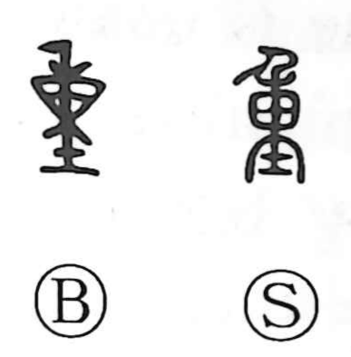

重

Uncategorized
Kun: omoi, omonjiru, kasaneru, kasanaru, e | On: juu, chou
heavy ・ weight ・ to pile up ・ layered ・ important
Explanation
This character is a compound of 東 and 土. In early forms, 東 depicts a sack tied at both ends, the original graph for a bag (as in 橐). By adding 土 beneath this sack—a form that evokes a weight or plumb bob—the graph comes to express the sense of “heavy.” From this concrete image of a weighted sack arose the idea of weight in measure, which is reflected in 量, where a spout is added above the sack-form to indicate measuring out grain. On that foundation, the meanings broadened from physical heaviness and weight to notions of piling and layering, and further to figurative senses of importance, gravity, solidity, and carefulness.